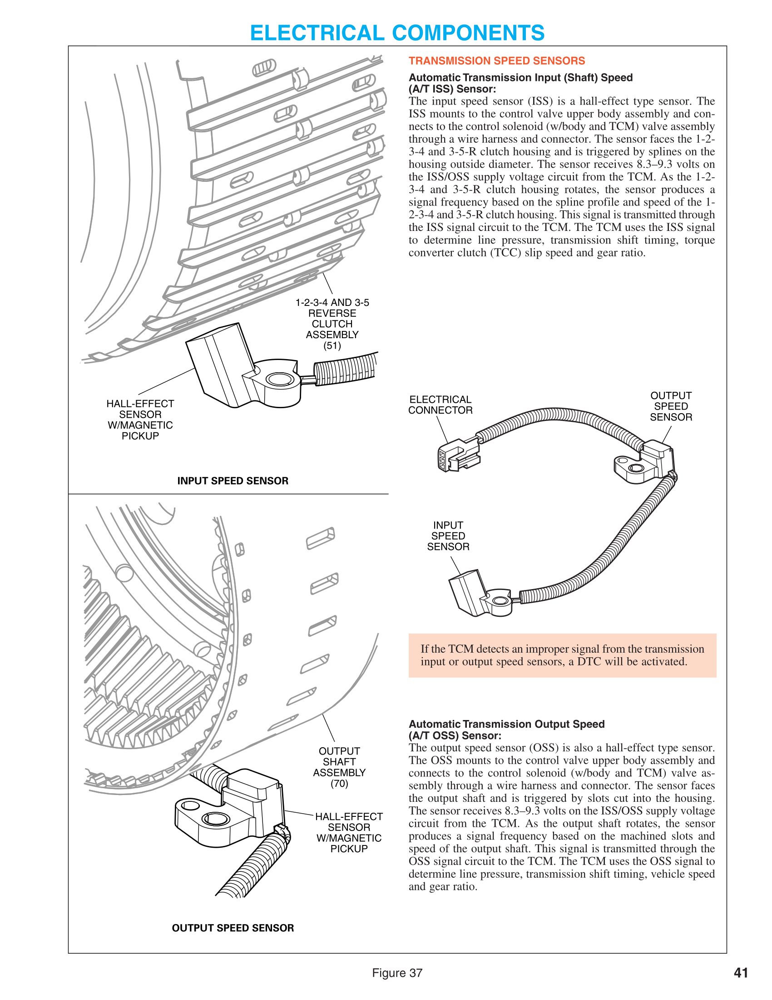

Weighted to the official 2026 A2 task list. Class notes, the Unit 1 quiz misses and the research pass, in one guide.
This is the professional ASE A2 (Automatic Transmission/Transaxle) guide. It follows the official 2026 task list and weights, uses everything in the autotrans folder (your class notes, the GM training slides, the Unit 1 quiz misses, and the research pass), and treats class examples as illustrations of manufacturer-independent mechanisms. ASE questions are generic unless the stem names an application.
Source boundary. Governing blueprint: ASE Automobile Study Guide 2026, A2 pages 10–15. Your notes: notes/ and note/. Everything else comes from the 2026-09-30 research pass, which was search-snippet level (full pages were blocked), then cross-checked in conflict_resolution.md. Where the guide gives a number it is an example or is SI-dependent; ASE gives the number in the stem. Torque-converter notes were still in progress when this was built.
45 scored questions (55 total, 75 minutes). Unscored research questions are not marked, so treat every question as scored.
| Official area | Scored questions | Share | Tasks | Questions per task |
|---|---|---|---|---|
| A. Diagnosis (general, mechanical/hydraulic, electronic) | 26 | 58% | 28 | ~0.93 |
| B. In-vehicle maintenance and repair | 12 | 27% | 12 | 1.00 |
| C. Removal, inspection, installation (incl. friction/reaction units) | 7 | 15% | 23 | ~0.30 |
Before choosing an answer, name:
Words matter:
Textbook and service-manual reasoning beats shop habit. If your shop experience suggests a different answer than the by-the-book one, the exam wants the by-the-book one.
Your class notes say to know it mostly as a flowchart, and that it is preferred over symptom-based. It has its own pages: Section 8 (last section of the guide).
These are logged in one place because you missed them. Each is also covered in its normal section.
| What you missed | Fix | Section |
|---|---|---|
| Carrier vs. ring gear layout (twice) | Carrier holds the planets. Ring is the big outer gear with internal teeth. Sun is the small center gear. | 1 |
| "Sun gear is also called the internal gear" | False. The internal gear is the ring gear. | 1 |
| What a Ravigneaux set is | Two suns, two planet sets, one carrier, one ring. LePelletier is a simple planetary plus a Ravigneaux. | 1 |
| Total ratio of two stages | Multiply, don't add. A large result isn't a reason to reject it. | 1 |
| Reaction multi-disc clutch: steel plates are splined to what | The transmission case. A reaction clutch anchors a member to the case. | 1 |
| Torque flow needs a driven, a held, and an output member | A disconnected member gives neutral, not torque flow. Carrier held means reversed rotation. | 1 |
Tasks: A.8, A.14, C.13, C.22 (also feeds C.19, C.23). The apply chart is the most reusable skill on the A2: the public sample item that reads one is a no-reverse question, and the answer comes from the chart, not from memory of a specific transmission.
An automatic uses hydraulically applied clutches and bands to connect or hold gear members, where a manual uses a sleeve and synchronizer. Torque flows only when one member is driven (input), one is held (reaction), and one is the output.
| Member | How to recognize it | Do not confuse with |
|---|---|---|
| Sun | Center gear, ordinary external teeth | It is not the "internal gear" |
| Planet carrier | Holds and carries the planet (pinion) gears | It is not the big outer gear |
| Ring (annulus, internal gear) | Large outer gear with teeth on the inside | Ring = internal gear, always |
carrier and ring were swapped, and "sun gear = internal gear" was chosen as true. Anchor questions: Who holds the planets? Carrier. Which gear has internal teeth? Ring. What is the center gear? Sun.
Recognition rules (identify input, reaction and output before applying):
| Result | Condition |
|---|---|
| Neutral | Nothing held, or a member disconnected: no torque path |
| Direct drive 1:1 | Two members driven together |
| Forward reduction | Carrier is the output |
| Forward overdrive | Carrier is the input |
| Reverse | Carrier is held (the output always turns the opposite way) |
| Reduction | Sun is the input |
| Overdrive | Sun is the output |
Example ratios for a sun of 30 teeth and a ring of 70 (carrier output unless stated): ring held, sun driven = (S+R)/S = 3.33:1; sun held, ring driven = (S+R)/R = 1.43:1; carrier held, sun driven = R/S = 2.33:1 reverse. Swapping input and output gives the reciprocal (overdrive); all eight cases are in Section 1.4. More planet pinions add strength, not a different ratio.
two gear sets in series: multiply the ratios, never add. A 2:1 followed by a 3:1 is 6:1. A large product is not a sign of a mistake.
Compound sets (recognition phrases):
| Set | Phrase |
|---|---|
| Simpson | One sun, two carriers, two rings (3- and 4-speed; a Simpson plus a simple set gives 4–5 per your textbook) |
| Ravigneaux | Two suns, two sets of planets, one carrier, one ring |
| LePelletier | Simple planetary + Ravigneaux (GM 6L80, Ford 6R80, ZF 6HP: five shift elements (multiplate clutches/brakes), no bands) |
The instructor said exact power flow need not be memorized, but the definitions and the ability to calculate or classify from a reference are fair game. 8-, 9- and 10-speeds mix several compound sets and do not fit one family name; use SI.
Shift types:
| Type | Meaning | Fault if mistimed |
|---|---|---|
| Synchronous (clutch-to-clutch) | Release and apply must be timed; usually no one-way clutch | Tie-up (harsh, two ratios at once) or flare (rpm rises) |
| Nonsynchronous (freewheel) | One-way clutch overruns as the next member applies; no timing | Few timing faults |
Most modern transmissions are synchronous. Garage shifts (Park/Neutral to Drive or Reverse, at rest) are slower and need high static friction; power shifts happen under load and need high dynamic friction.
Worked example (generic Simpson-style 3-speed). 1st = forward + low roller; 2nd = forward + intermediate; 3rd = forward + direct; Reverse = direct + low/reverse; manual 1 adds low/reverse.
a distractor may be an element that also applies in a working range (cleared), or a seized element offered for a no-drive symptom (a seized element binds; it does not leave you without a range).
The unique-element trap, using the class 10-speed chart. Reverse applies C1, C2, C4 and C6. Every one of those also applies in some forward range that works, so no single friction element is reverse-only on that unit. A "no reverse, all forward normal" complaint cannot be solved by the chart alone: move to pressure by range and the reverse circuit (see Section 2). On many units the "reverse-only" element is really shared with manual-1 engine braking, so always ask about it. The chart model is not identified in the slides; use the method, not memorized cells.
Multi-range symptoms are normal on clutch-to-clutch units. On a LePelletier (two elements per gear) one failed clutch removes several ranges (for example, one clutch shared by 3rd, 5th and reverse). That is a single failure, not several.
Name collisions: Chrysler "front clutch" is the GM/Ford "direct" clutch, and "rear" is "forward." Ford/ZF use letters, GM 6L80 uses gear-number names. Allison 1000 reverse is C3 + C5 (C2 is not applied in reverse). Read the chart given, not the names you remember.
Examples to recognize, not memorize (design-dependent): - 4L60-E: the low roller clutch holds only 1st in Drive, so it cannot cause slip in all forward gears; slip in every forward range with reverse working points to the forward (input) clutch, its sprag or its circuit. A backward forward sprag: no drive in D4 and D3 takeoff, yet manual 2 and 1 still move via the overrun clutch (LIKELY; forum evidence). The stock overrun clutch is applied in D3 only in 3rd (LIKELY); applying it in D3 1st/2nd is a performance modification. - "No reverse and no manual-1 braking" = low/reverse element. "No reverse only" = a reverse-only element if the unit has one (4L60-E reverse input clutch).
Built from your handwritten reference (note/more-planetary-definitions.jpg). Your rows were right except direct drive, which is not "sun held"; two members are locked together and nothing is held. Two valid configurations were also missing. Ratio = input turns : output turns. Example teeth: sun 30, ring 70 (so ring/sun = 2.33).
| # | Input | Held | Output | Carrier is | Result | Ratio (30/70) | Torque | Direction |
|---|---|---|---|---|---|---|---|---|
| 1 | Sun | Ring | Carrier | output | Reduction (lowest gear) | 3.33:1 | Highest | Same as input |
| 2 | Ring | Sun | Carrier | output | Reduction (middle gear) | 1.43:1 | Moderate | Same as input |
| 3 | Any two members | Nothing | Whole set | any | Direct drive | 1:1 | Same as input | Same as input |
| 4 | Carrier | Sun | Ring | input | Overdrive | 0.70:1 | Lower | Same as input |
| 5 | Carrier | Ring | Sun | input | Overdrive (steepest) | 0.30:1 | Lowest | Same as input |
| 6 | Sun | Carrier | Ring | held | Reverse, reduction | 2.33:1 | High | Opposite |
| 7 | Ring | Carrier | Sun | held | Reverse, overdrive | 0.43:1 | Lower | Opposite |
| 8 | Nothing held, or a member disconnected | Neutral | none | none | none |
How to get any row without memorizing it. (1) Locate the carrier: output = reduction, input = overdrive, held = reverse. (2) The sun is the smallest gear, so the hookups involving the sun and the ring with the other member held give the most extreme ratios (rows 1 and 5). (3) Swap input and output and the ratio flips to its reciprocal: row 1 and row 5 (3.33 and 0.30), row 2 and row 4 (1.43 and 0.70), row 6 and row 7 (2.33 and 0.43). Torque goes up as speed goes down.
Formulas (S = sun teeth, R = ring teeth): row 1 = (S+R)/S; row 2 = (S+R)/R; row 4 = R/(S+R); row 5 = S/(S+R); rows 6 and 7 = R/S and S/R. Check: 100/30 = 3.33; 100/70 = 1.43; 70/100 = 0.70; 30/100 = 0.30; 70/30 = 2.33; 30/70 = 0.43.
a disconnected member means no torque path, so neutral. Question 25 on your quiz: "a member being disconnected" is the one action that is not needed for torque flow. Holding is not the same as disconnecting.
Which rows a given unit uses, and in which gear, comes from its apply chart, not from this table.
The chart narrows to one or two elements. Before blaming a friction element, rule out fluid level, range sensor and linkage, commanded gear on the scan tool, and failsafe (which can mimic a multi-element failure). Confirm with line pressure by range (a low reading in one range with the others fine = that circuit leaking) and, on disassembly, an air test of each apply piston.
Loss of hold = failed/released; extra hold = seized/dragging. Find the range where the extra hold fights an element that should be on.
Areas A.2, A.4, A.8–A.15, A.22. This is the largest block on the exam: Area A is 58% of the test, and these tasks are the symptom-to-cause reasoning ASE asks most often. Most items give a symptom and ask for the most likely cause, the first check, or the check that separates two causes.
Classify the symptom by what it follows. This one move sorts most questions before you look at the choices.
| The symptom follows… | Think first of… |
|---|---|
| Engine rpm (also in P/N) | Pump, converter, flexplate |
| Road speed | Gear train, output, final drive, tires/driveline |
| One gear or range only | The apply element unique to that range (apply chart) |
| Every range | Fluid, pump/pressure, input clutch, manual valve/linkage |
| Cold only, clears warm | Fluid level, thick-fluid or bore-leak effects |
| First engagement after sitting | Converter drain-back |
| Only after an auto-restart | Stop/start hold system (auxiliary pump or accumulator) |
| Engine data (misfire, TPS) or wheel-speed data | Not the transmission |
Tasks: A.2, A.4, A.10, B.12
Verify the complaint and check the fluid before anything else. A wrong level makes every later road-test symptom unreliable, and low or overfull fluid is the simplest cause consistent with many slip, delay and noise stems.
Level - Dipstick unit: follow the SI for engine running or off and for gear position. Methods differ. - No-dipstick unit (the public sample-question style): read fluid temperature on the scan tool and confirm it is inside the SI window; vehicle level; engine idling; shift through the ranges if SI says so; open the level plug. A small trickle or drip is correct. A steady stream is overfull; nothing coming out is low. - Why the temperature window matters: ATF expands as it warms, so a level set cold reads overfull once hot. A vehicle that is not level gives a false trickle or none.
"Check the level cold" or "with the vehicle on the lift, however it sits" is the wrong answer on a plug-check unit. The temperature window and level vehicle are part of the procedure. Take the actual window from SI; it differs by unit.
Low vs. overfull: both slip, both are fluid problems
| Condition | What happens | Clue |
|---|---|---|
| Low | Pump pulls air; apply pressure is weak or erratic | Slip, flare or delay, worst when fluid sloshes (cornering, braking, cold) |
| Overfull | Rotating parts whip air into the fluid (aeration); foamy fluid carries pressure and heat poorly | Slip, heat, fluid pushed out the vent, foam on the dipstick |
a vehicle that slips or flares when cornering while cold, but is fine when warm, points to low fluid level. Overfull can slip through aeration. Also: a poorly running engine can feel like a transmission problem, and the wrong fluid can cause shift issues.
Condition
| Observation | Meaning |
|---|---|
| Translucent red/pink, no particles | Normal (color norms vary by fluid; check SI) |
| Dark brown/black, burnt smell | Overheated or oxidized fluid; burned friction material; varnish can stick valves |
| Milky pink ("milkshake") | Coolant has entered through a leaking in-radiator cooler |
| Fine gray paste on the magnet | Normal wear |
| Large flakes, metal slivers, brass chunks | Active failure |
milky ATF means replace the radiator/cooler and repair the damage (seals, frictions, converter) and flush. "Drain and refill" or "flush only" is the distractor. The coolant can also be the thing that damaged the clutches.
Leaks and where they come from. Red fluid at the bellhousing points to the front pump seal or converter-hub seal. Dark engine oil points to the rear main seal. Confirm by pulling the inspection cover or using UV dye in an ATF-rated dye (clean first, run, then inspect). Fluid out the vent points to overfill or aeration before an internal failure.
Tasks: A.8, A.9, A.23 (mechanical side)
Road test in every range, with scan data where possible. Learn the terms by what they do to rpm, because the exam uses them precisely.
| Term | What it is | Rpm / feel |
|---|---|---|
| Slip | Friction element not holding; lasts beyond the shift and can occur while cruising in gear | Rpm up, no matching speed |
| Flare | One element releases before the oncoming one holds (underlap / low apply pressure / late oncoming circuit) | Rpm rises briefly during the shift |
| Tie-up = bind-up | Two ratios applied at once (overlap), or an element that fails to release or a one-way element installed backward | Output feels braked; rpm pulled down |
| Harsh / bump | Apply pressure rises too fast | Firm, abrupt shift |
| Slide-bump | Accumulator piston bottoms out before the shift finishes, so pressure spikes at the end | Smooth start, harsh finish |
| Delayed engagement | Lag moving from P/N into D or R | Low fluid, low pump pressure, worn seals/valve body, clogged filter; worse cold |
| Garage shift | Neutral-to-drive or neutral-to-reverse apply made at rest | Slower and softer than power shifts by design |
Tie-up and bind-up are the same fault, and the diagnosis is the same: an overlap or late release. Flare is the opposite of overlap. Worn friction is only one possible cause of either; both are timing faults.
every shift change is a handoff. Offgoing releases and oncoming applies. Released too soon = flare. Applied too soon (or released late) = tie-up. A mistimed synchronous (clutch-to-clutch) shift is exactly why timing matters; a one-way clutch handoff needs no timing.
Accumulators. An accumulator is tied to a clutch or band circuit and absorbs fluid as pressure builds, which slows the pressure rise and lengthens the apply. It does not store backup pressure. A faulty accumulator or broken spring gives harsh shifts, and the shift it belongs to tells you which one (hard N-D points to the N-D accumulator; hard 1-2 to the 1-2). Many modern clutch-to-clutch units have dropped accumulators because pressure-control solenoids shape the apply directly.
Noise and vibration. Does it follow engine rpm or road speed? A whine in P/N that rises with rpm is almost always the pump (also a clogged filter or pickup-side air leak). Vibration in P/N at a fixed rpm points to the flexplate or converter. A noise in one gear only points to that gear's apply element or planetary set, found with the apply chart.
Delays that happen only sometimes - Delay only on the first engagement after sitting: converter drain-back (the converter drains to the sump). Overnight level check: note the level, recheck in the morning. - Clunk or delay only after an auto-restart, normal after a key start: the stop/start hold system (electric auxiliary pump, or a solenoid-latched accumulator on some units). A bad mount would clunk on every engagement. The stored-pressure accumulator is also a safety hazard on disassembly.
ASE expects: map the slang to the mechanism before answering. Flare means underlap or low apply pressure (rpm up). Tie-up means overlap (rpm down, output braked).
Tasks: A.8, A.14
The full elimination method, with a worked example, is in Section 1.3. The one-line version: several failed ranges, find the element common to all of them; one failed range, find the element unique to it; clear anything that applies in a range that works. No forward and no reverse points to something common to everything (fluid level, pump or pressure, manual valve/linkage, converter/input), not one clutch.
a one-way clutch used in first gear only cannot cause slip in every forward gear. Slip in all forward gears with reverse OK points to the forward/input clutch or its circuit. Slip in first gear in D but not in manual 1 points to the one-way clutch, because manual 1 applies a band or clutch that holds the same member.
Tasks: A.11, A.14, A.17
Order (OEM service text states it): fluid level and condition → line pressure → stall test only if the OEM publishes one. If line pressure is low, do not stall test. Many current units have no stall spec, so check SI before assuming one.
Preconditions: correct fluid and level, operating temperature, engine running properly, brakes applied and wheels chocked, a gauge with enough range at the correct tap (tap location is unit-specific). Read idle and loaded pressure in each range SI lists, and compare with the SI chart.
| Reading | Most likely area |
|---|---|
| Low in all ranges | Common supply: low fluid, clogged or leaking filter/pickup (aeration), worn pump, stuck or weak pressure regulator, large common leak |
| Low in one range only | A leak in the circuit fed only in that range (piston seal, sealing ring, servo seal, that range's valve or passage). Confirm with the apply chart and a range that shares the element |
| High in all ranges | Stuck regulator; EPC/PC solenoid in failsafe (unplugged, open circuit, stuck); older units: TV cable misadjusted or modulator vacuum lost |
| Won't rise with throttle/command | TV linkage/cable or modulator/boost valve fault; EPC units: command not changing, solenoid not responding, boost/regulator valve stuck |
| Normal pressure, no engagement | Routing (manual valve, shift/clutch-select valve, check ball, separator plate) or a mechanical failure (broken clutch, sprag) |
Reverse pressure runs higher. Reverse oil acts on the pressure regulator/boost valve and raises line pressure (documented in boost-valve patents). The usual explanation is that the reverse holding members carry the highest reaction torque (INFERRED, low-authority source). Low pressure in R only = a reverse-circuit leak or boost-valve fault. Low everywhere = supply.
Two-gauge method. One gauge on line pressure and one on the clutch or servo circuit, read together. A clutch circuit reading well below line pressure means a leak in that circuit (the allowed difference is SI-dependent). Air testing with the valve body off locates the leaking element.
Electronic pressure control: command is not pressure. The scan tool shows a command. Only a gauge shows actual pressure. Classic EPC/PCS behavior is inverse: more current = lower pressure; low or no current (or unplugged) = maximum pressure. A GM line PC solenoid is normally high the same way. Unplugging the solenoid or its connector therefore drives pressure to maximum, which can mask a subtle circuit leak. - Command changes and the gauge follows = solenoid, regulator and pump are working. - Command changes, current tracks the command, but the gauge does not follow = hydraulic supply or a leak (stuck valve, worn bore, pump). - No command change = input, strategy or circuit problem.
when a stem shows rising commanded current and falling pressure, do not call it a fault. On the classic design that is normal. Read the stem for a different design before applying the rule.
Older (hydraulic) load signals, as principles. Governor pressure rises with road speed. Throttle valve (TV) pressure follows throttle position. They oppose at the shift valve, so more throttle needs more speed to shift. A vacuum modulator turns engine vacuum into the TV signal: high vacuum (light load) = low pressure, soft early shifts; low vacuum (load, a leak, a disconnected hose) = high pressure, firm late shifts. A ruptured modulator diaphragm draws ATF into the intake: ATF in the vacuum hose, unexplained fluid loss with no visible leak, white smoke. On a TV-cable unit (legacy 700R4 type), too loose = low pressure and early soft shifts (burns it up); too tight = high pressure and late harsh shifts.
Tasks: A.14, A.17 (also B.6, B.8)
Valves fall into three jobs: switch valves route flow, servo valves move other valves, and regulator valves control pressure. Most are spool valves in a bore, usually with a spring. Transmission pumps can build excess pressure quickly, so every unit has a pressure regulator (pressure control) valve.
| Valve / part | Job | Fault picture |
|---|---|---|
| Pressure regulator + boost | Pump pressure vs. spring plus boost force; excess goes to the converter feed, then to the suction side | Worn bore or sleeve: low/erratic line pressure, soft shifts, delayed or harsh reverse; worse hot |
| Manual valve | Driver-selected circuits for P, R, N, D, manual ranges | Misadjusted linkage: creep in neutral, delayed engagement, burned clutches; symptom changes as the shifter moves a little |
| Shift / clutch-select valve | Routes pressure to apply circuits; stroked by a solenoid or by governor/TV force | Stuck valve mimics a solenoid stuck on or off; a good solenoid circuit test with a wrong-gear symptom points to the valve |
| Accumulator | Cushions apply | Broken spring or bad seal = harsh shift for that circuit |
| Orifice and check ball | Meter apply and exhaust at different rates | Missing/worn ball or enlarged orifice = harsh, fast apply or clunky release; plugged orifice = slow or delayed |
| TCC apply / regulator valves | Control converter clutch apply pressure | Worn bore bleeds apply oil: slip codes. Abrupt slip swings = apply valve; gradual, load- and heat-sensitive slip = regulator or bore wear |
Sticking vs. wear. Debris or varnish tends to cause intermittent, cold-worse wrong-gear, no-shift or TCC symptoms. Bore wear tends to be progressive and hot-worse (thin fluid leaks more) and may set several pressure-control DTCs at once. TCC slip + soft shifts + several solenoid DTCs, worse hot fits upstream bore wear more than several failed solenoids.
Routing vs. supply. On clutch-to-clutch units, no movement with normal line pressure points to routing (clutch-select valve, check ball, separator plate), not the pump. This is "low in one range" logic applied to a solenoid-controlled unit.
Failsafe behavior. On many units, with the control solenoid body or TCM disabled: the pressure solenoid goes off (maximum line pressure), the TCC solenoid goes off (no lockup), and the transmission defaults to a fixed gear while reverse stays available. Firm engagement with a fixed gear after a power loss is designed failsafe, not mechanical damage (confirm the default gear in SI).
Converter-out → cooler → lube. Oil leaving the converter flows to the cooler and returns as lube. A restricted cooler or line reduces cooling and lube flow, causing overheating and bushing/planetary wear. Check cooler flow (or at least head pressure) before condemning internals, and flush or replace the cooler after a hard-parts failure. A thermal bypass valve stuck in bypass starves cooler flow and overheats.
Tasks: A.12, A.13
Converter basics (from your notes). The impeller (pump) is the driving member and turns with the housing. The turbine is splined to the input shaft. The stator (reactor) rides on a one-way clutch and is the reaction member. At stall/low speed, return fluid hits the stator's front, the one-way clutch locks it, and it redirects fluid to help the impeller: torque is multiplied. At coupling, turbine speed nearly equals impeller speed, the fluid hits the back of the stator blades, the one-way clutch overruns, and there is no multiplication. Creep is normal with the brakes released. A non-lockup converter always has some slip. The converter is the main heat source, and stall superheats fluid.
Stator one-way clutch: two opposite failures
| Freewheeling (not holding) | Seized (locked both ways) | |
|---|---|---|
| Launch | Poor; sluggish to moderate speed | Normal |
| High speed | Normal | Poor: power loss, heat, poor economy |
| Stall test | Low | Not a reliable indicator. A good stator is held at stall anyway, so expect little change (reasoned; no textbook page states it). Diagnose a seized stator from the symptoms and heat |
| Memory aid | Lose the low end (no multiplication) | Lose the top end (no coupling) |
ASE expects: the public-sample pattern, poor launch but normal above about 35 mph, is a freewheeling stator. The mirror image, good launch, poor top speed, overheating, is a seized stator. Bench check on a removed converter: the stator should turn one way and lock the other; free both ways or locked both ways means replace the converter (a general shop does not repair one).
Stall test: interpret both directions - Stall rpm and procedure come from SI. Typical OEM limits are about 5 seconds at wide-open throttle and a cool-down between ranges (examples, SI-dependent). Brakes applied and wheels chocked. - High stall = something in the transmission is slipping (clutch, band, one-way clutch). Compare D and R to find the shared element. Nothing inside the converter makes stall higher than spec. - Low stall = the engine is not making power (misfire, restricted exhaust) or the stator is freewheeling. Rule out the engine first. A slightly low reading points to the engine; a very low reading with a poor launch points to the stator. - A TCC stuck on can make a stall test impossible or misleading (the engine may die in gear), so do not stall-test that complaint.
some flashcards say "stall 200 rpm above spec means the stator is not holding." That is backwards. High stall is a transmission holding element; a stator that is not holding gives LOW stall. Your own note ("nothing in the converter makes stall higher than spec") is correct.
Torque converter clutch (TCC) - The module applies the TCC only when conditions are right: warm fluid/engine, enough speed and gear, steady throttle (not closed or WOT), brake off. It uses brake switch, TPS, ECT/TFT and speed sensors. A bad input usually prevents lockup (brake switch stuck "applied," TPS dead spot, cold-reading temperature sensor). Check the inputs and the TCC-enable data before condemning the solenoid or converter. - Flow: release oil is fed between the cover and the pressure plate to hold it off. To apply, the TCC PC solenoid regulates apply oil to the other side. Apply and release oil are routed through passages between the converter hub, stator shaft and turbine shaft.
| Symptom | Cause |
|---|---|
| Engine stalls or nearly stalls coming to a stop; slip reads 0 at a stop | TCC stuck on: stuck solenoid or apply valve, a short keeping it energized, lost speed signal (P0742) |
| High cruise rpm, poor economy, overheating; commanded on but slip stays high | TCC not holding (P0741). Commanded on + slip high = the apply side (pressure, leaks, friction) failed, not the command |
| Rumble-strip shudder at light-throttle cruise that goes away when the TCC releases or locks fully | TCC friction stick-slip: degraded/wrong fluid, glazed lining, low clamping force |
| Clunk on lockup | Harsh apply, or slack (loose converter bolts, cracked flexplate, mounts) |
Apply-pressure loss before the piston. Many "bad converter" complaints are leaks upstream of the piston: worn TCC regulator or apply valve bores, a worn stator-support (pump cover) bushing, or a damaged turbine-shaft seal or O-ring. Pressure and flow testing separates these from true converter faults (lining wear, glazing, a leaking piston seal).
Shudder vs. misfire. A misfire or "chuggle" follows engine firing frequency and shows in misfire or cylinder data. True TCC shudder is present in normal operation but absent with the TCC disabled and absent with it fully locked. Converter imbalance follows engine rpm even in neutral. Worn mounts imitate both. Do not reset adapts to cure shudder.
an overdrive transmission that will not lock the converter overheats. TCC slip dropping from about 200 rpm to zero at apply is normal; "near zero at full lock" is what is tested, and any number will be in the stem.
ASE expects: diagnose from slip data and commanded state, not remembered numbers: commanded on and slip high means the apply side; slip near zero at a stop means stuck on.
Task: A.22 (mechanical side), A.2
Pull engine and transmission codes and verify inputs before condemning the transmission.
| Looks like… | Actually… | Separating check |
|---|---|---|
| TCC shudder | Engine misfire | Misfire counters, cylinder data; command the TCC off and see if it follows |
| Harsh or late/early shifts | TPS, MAF/MAP input | A TPS reading closed shifts early and soft; open shifts late and harsh. Check the signal first |
| No upshift, erratic shifts | Wheel-speed/ABS or VSS fault | Compare speed sensors and DTCs |
| Clunk on engagement | Motor mount, CV joint, U-joint | Visual; does it clunk on every engagement? |
| Binding in turns (4WD) | Mismatched tire size | Compare rolling circumference |
| Slip after fluid service | Overfill | Level and foam |
| Rough shifts right after a reflash | Zeroed adapts | Complete the relearn before suspecting a new mechanical fault |
"it's a transmission RO, so it's the transmission." A symptom that follows engine data, wheel-speed data, tire size or chassis movement belongs outside the transmission. One that follows TCC on/off, one range, or the transmission's own speed data belongs to the transmission.
ASE expects: the answer must explain every symptom in the stem, test before replacing, and choose the simplest verified cause over the rare one.
Electronic systems are your strongest ground, so this section skips basic electrical theory and spends its words on transmission-specific logic. Nearly every electronic question comes down to one habit: separate what the module commanded from what actually happened, and separate the signal voltage from what the module reads out. Do that and the answer follows the circuit, not a remembered number.
A "command" or "desired" value on the scan tool is what the TCM asked for. It is not proof the transmission did it. Use the paired checks below: a DMM or amp clamp separates electrical faults, and a pressure gauge or ratio PID separates hydraulic and mechanical ones.
| What you observe after the command | Most likely area |
|---|---|
| Command sent, current tracks the command, pressure or ratio responds correctly | Output path is fine. Look at inputs, calibration, adapts, or an intermittent fault |
| Command sent, current tracks the command, but no pressure or ratio change | Hydraulic or mechanical: stuck valve, cross-leak, clutch or seal, pump or regulator |
| Command sent, no click, current does not track the command, circuit DTC | Electrical: coil, harness, connector, TCM driver. Confirm with a DMM |
| Module never commands the shift or apply | Enable conditions or inputs (TFT, OSS/VSS, TPS, brake switch, range switch) or the module itself |
| Commanded pressure ≠ gauge pressure, current tracks the command | Hydraulic supply, regulation or a leak, not the solenoid |
"Solenoid clicks" proves only that the coil and plunger moved. It does not prove the valve it feeds strokes or that oil reaches the clutch. Click but no shift = hydraulic or mechanical.
ASE trap: A rebuilder tip says a pressure mismatch always means "solenoid or wiring." Compare current to the command to judge the solenoid; compare gauge pressure to the command to judge the hydraulics. Use both.
DTC suffix logic. "Circuit / open / low / high / electrical" (P0712, P0713, P0753, P0960–P0963) means an electrical fault, so use a DMM or scope. "Performance / stuck off / stuck on / incorrect ratio" (P0751/52, P0741/42, P0731–P0736) is a functional result worked out from speeds or slip. The fault can be hydraulic or mechanical even though the circuit tests good.
Tasks: A.5, A.19, A.24, A.26.
The TCM reads input and output shaft speed, range, fluid pressure and fluid temperature. It drives the shift and pressure-control solenoids. It also borrows from the engine side: accelerator pedal position (APP), throttle position (TP), engine coolant temperature, MAP/MAF load, engine torque, and the brake switch. It sits on the CAN network, so other modules' data feeds its decisions. Shift timing, shift feel and TCC timing are largely software, so the same hardware can behave differently by calibration.
CAN checks. With the bus powered down, CAN-H to CAN-L reads about 60 Ω (the bus has a 120 Ω terminator at each end, and two in parallel make 60 Ω). About 120 Ω means one terminator is open. Near 0 Ω means H is shorted to L. Both lines typically sit near 2.5 V at rest; when a module transmits, CAN-H is driven toward 3.5 V and CAN-L toward 1.5 V. Both lines at 0 V is a short to ground, both at battery voltage is a short to power, and one line flat while the other switches is an open on the flat line. A single bad module can pull the whole bus down; unplug modules one at a time to find it. U0100 is lost communication with the ECM/PCM, U0101 with the TCM.
Power and ground. Test with voltage drop under load, not with an ohmmeter. An ohmmeter passes almost no current and misses a few good strands in a bad wire. Commonly cited limits are about 0.1 V per connection and 0.2 V across a ground cable (0.3 V for a whole side of the circuit), but the OEM spec governs. Low or noisy system voltage can reset the TCM, knock modules off the bus, freeze adapts and send the unit to a default gear.
Several modules setting U-codes at once, or intermittent shifting after a battery change or jump-start, points to supply voltage, grounds or the bus. One U-code points to that module's power, ground or bus branch. Check battery, charging and TCM power/ground before replacing any module.
Tasks: A.19, A.20, A.21, A.27, B.10.
Speed sensors (ISS/OSS). The input speed sensor (also turbine speed sensor, TSS) reads input-shaft speed. The output speed sensor (also vehicle speed sensor) reads output speed. Gear ratio is ISS ÷ OSS, and TCC slip is engine rpm − turbine rpm. The 6L80 technician guide describes both as hall-effect sensors on a TCM supply of 8.3–9.3 V. The ISS reads splines on a clutch-housing outside diameter; the OSS reads slots cut in the output shaft. The housing itself is the reluctor, so there is no separate tone wheel. The TCM uses ISS for line pressure, shift timing, TCC slip and gear ratio, and OSS for line pressure, shift timing, vehicle speed and gear ratio. An improper signal from either sets a DTC.

| Sensor type | Signal | How to test |
|---|---|---|
| Magnetic (variable reluctance) | AC; amplitude and frequency rise with speed. Produces little signal at very low speed | Ohms and AC mV. Check air gap and metal debris on the tip |
| Hall / active | Square wave from near 0 V up to the supply or pull-up level. Works down to zero speed | No ohmmeter. A DMM can check the reference voltage and ground. Scope the signal for a clean square wave as the target turns |
A bad speed signal can produce ratio-error or performance codes on a mechanically healthy unit, because the TCM calculates slip and shift time from these speeds. It can also cause harsh shifts, a disabled TCC or limp mode. A circuit code such as P0715 is "not proof that the sensor failed." Wiring and connector faults are common, so scope the signal before condemning clutches.
Fluid temperature (TFT). Most are NTC thermistors: resistance falls as temperature rises. The TCM supplies a reference voltage and reads the drop. Cold means high resistance and high signal voltage.
| Fault | Signal voltage | TCM reads | DTC |
|---|---|---|---|
| Open circuit | High | Very cold (about −40 °C) | P0713 (high input) |
| Short to ground | Low | Very hot (150 °C or more) | P0712 (low input) |
A falsely hot reading can make the TCM lock up the TCC earlier or disable overdrive to shed heat. A falsely cold reading can inhibit TCC and adapts.
Some websites say a short reads −40. That is backwards for a pull-up NTC circuit, and the Toyota factory manuals confirm open = cold, short = hot. Reason from the voltage divider.
Pressure switches and pressure logic. Switches are on/off, either normally open (N.O.) or normally closed (N.C.). The TCM reads the switch pattern (binary 1/0) to confirm which clutch has pressure and therefore which gear is really engaged. In the 6L80 they are normally closed: current flows with no pressure, and pressure moves a diaphragm and opens the circuit. Pressure sensors differ: a transducer gives a variable signal proportional to pressure.
Range sensor (TR / MLP). It tells the TCM the driver's selected range. A failed or misadjusted switch can cause no-crank in Park, a wrong gear display, a fixed default gear, and P0705 (circuit) or P0706 (range/performance). The test is to compare the physical selector position with the range the TCM reports in scan data, then adjust or replace. GM's internal mode switch uses four coded inputs, and the TCM decodes range from the high/low pattern. Use the PIDs, not memorized DTC numbers.
Other inputs. TP or APP errors skew the TCM's idea of engine load. A dead spot or erratic signal gives inconsistent or harsh shifts and affects kickdown. The brake switch releases the TCC, so a stuck or misadjusted switch can prevent lockup or cause stalling at a stop.
Tasks: A.5, A.19, A.23, A.26, A.28.
| Type | What it does | Direction to remember |
|---|---|---|
| On/off shift solenoid | Switches a shift or clutch-select valve | Normally closed, 3-port in the 6L80 example |
| PWM / variable-force pressure solenoid (EPC, line PC, clutch PC) | Sets pressure by duty cycle or current | Design-dependent. See below |
| TCC PC solenoid | Ramps TCC apply and release for a smooth lockup | Normally low in the 6L80 example |
Classic EPC / normally-high line PC: more current (higher duty) = lower line pressure; unplugged = maximum pressure, which gives harsh engagement. In the 6L80 example the line PC runs about 0.1 A for maximum pressure to about 1.0 A for minimum, and EPC pulse-width modulates at a fixed 300–600 Hz. Some newer valves are normally low, where more current gives more pressure. If a stem describes another design, follow the stem.
Testing. - A DMM finds opens and excessive resistance but is poor at finding a partly shorted winding. An amp-clamp current ramp on a scope is better: a normal trace shows a small hump (the "gull-wing") where the plunger moves, no hump means the plunger is not moving, a shorted winding changes the trace (compare with a known-good solenoid), and an open shows no current. - A voltage-only trace can look normal with a partly shorted coil. - Scope duty cycle and frequency at the TCM connector with the engine running; confirm that current follows the command. - Low supply voltage can keep a current-controlled solenoid from reaching its commanded current. On a normally-high design that makes pressure too high (harsh); on a normally-low design, too low (soft). - INFERRED: whether a short to ground turns a solenoid permanently on or off depends on whether the TCM drives it from the high side or the low side. Read the stem.
Tasks: A.5, A.17, A.18, A.26, A.27.
The TCM applies the TCC only when conditions allow: fluid and engine warm, speed and gear high enough, steady throttle, brake off. A failed input usually prevents lockup: brake switch reading "applied," a TP dead spot, a cold-reading temperature sensor, or no speed signal. A few fail the other way: a falsely hot TFT can lock up early, and a lost speed signal can leave the TCC applied as the vehicle stops, so the engine stalls.
TCC commanded on and slip stays high = the TCC is not holding. Check apply pressure and leaks (valve bores, stator-support bushing, turbine-shaft seal) before condemning the converter. Pressure low while commanded = supply side or leak. Pressure normal and slip still high = the converter lining itself. At full lock, slip is near zero. A small steady slip is normal on a controlled-slip strategy. Any "too much slip" threshold will be in the stem, because GM set criteria differ by model and year.
Shudder vs. misfire. True TCC shudder shows only while the clutch slips or applies. It disappears with the TCC commanded off and also with it fully locked. A misfire follows engine firing frequency, shows in misfire data, and is often worse locked because the fluid coupling no longer damps it. Fluid condition is the first suspect for shudder.
Tasks: A.13, A.18.
Verifying a repair (A.7): record DTCs and freeze frame, repair, clear with a scan tool, drive under the freeze-frame conditions until the monitor or DTC status shows it ran and passed, and confirm no pending code. Clearing codes or disconnecting the battery resets monitors to "incomplete," so a clear with no code returning is not proof of repair.
"Disconnect the battery to clear codes" is the wrong answer on a sample-style item, and it will not remove a permanent DTC either.
Tasks: A.6, A.7.
A bidirectional tool commands outputs (solenoids, relays, special functions) and watches the result. A code reader only reads. The sequence is: command the output, then meter the circuit and gauge the hydraulics before replacing a part.
Tasks: A.5, A.16, A.17, A.24.
Adapts are the TCM's closed-loop correction of shift pressure and fill timing, learned from ISS/OSS speeds. They work like fuel trim. Names differ (GM TAP, Ford adaptive tables in KAM, Chrysler CVI), but the principle is universal.
"Clearing adapts will fix the harsh shift" vs. "adapts must be relearned after the valve body is replaced." The second is correct. The first treats a reset as a repair.
Tasks: A.23, A.25, C.6.
Typical patterns, INFERRED from how the TCM scales pressure to the signals it reads; not from a single source.
| Cause | What the TCM does | Feel |
|---|---|---|
| TP/APP or torque signal reads lower than actual | Commands too little pressure | Flare, slip, soft shifts, adapts climb |
| Signal reads higher than actual | Commands too much pressure | Harsh shifts |
| Missing torque-reduction response from the ECM | Clutches absorb full engine torque | Harsh upshift |
| Noisy or dropping ISS/OSS | Calculates false slip and shift time | Added pressure, ratio DTCs on a healthy unit |
| Mechanically sluggish or drifting solenoid | Circuit tests normal | Shift-quality complaint with no DTC |
Flare (rpm rises) means torque capacity was lost: oncoming clutch late or offgoing released early. Tie-up / bind-up (same thing) means overlap and a braked output. Graph ISS, OSS and commanded gear together to tell them apart.
Tasks: A.9, A.23.
Many "transmission" complaints start elsewhere. Work in this order:
Examples. A failed wheel-speed sensor or lost EBCM data can remove vehicle speed: no upshift, dead speedometer, TCC and cruise disabled. Traction control cuts engine torque, which feels like slipping, but the TCM ratio stays correct. A misfire or fuel/airflow fault makes engine torque wrong and shifts harsh. A tire-size or axle-ratio change without recalibration throws off speed-based logic, so recalibrate before diagnosing. Adaptive cruise can command an engine-braking downshift that is normal. Stop/start bumps only on auto-restart point to the auxiliary pump or accumulator.
Tasks: A.22, A.21, A.28.
| Wrong statement | Correct |
|---|---|
| Short to ground reads −40 | Open reads cold; short to ground reads hot |
| A scan-tool clear or battery pull erases permanent DTCs | Only the monitor passing (or three clean trips) does |
| Disconnect the battery to clear codes | Clear with a scan tool, then verify with a drive cycle |
| Clearing adapts fixes a worn unit | Reset is verification, not repair |
| More EPC current always means more pressure | Classic EPC: more current = less pressure; unplugged = maximum |
| Ohmmeter-test a Hall speed sensor | Check reference, ground and signal toggle |
| Solenoid clicks, so the electrical side is done | Clicks prove only the coil moved |
| History DTCs always erase at 40 warm-ups | 40 is the general number; OEMs often say 80 for misfire and fuel-system faults |
Area B has the best yield per task on the exam: 12 questions across 12 tasks. It is also the thinnest area in your class notes. The questions are mostly "what is the most likely cause, or what do you do first," and the reliable scoring pattern is the same everywhere: verify the cheap root cause before you replace the expensive part.
| Instead of this (shop shortcut) | ASE usually wants |
|---|---|
| Replace the TR switch | Check cable/linkage and detent position first |
| Replace the extension-housing seal | Check the bushing and the yoke's seal surface too |
| Flush and refill milky fluid | Replace the cooler, rebuild the unit (seals, frictions, converter), then flush |
| Replace the TCM that has ATF in the connector | Repair the leaking pass-through/harness too, or the new TCM floods |
| Add fluid because it slips | Confirm the level the SI way first. Overfill slips too |
The TR switch (a.k.a. MLP sensor) does two jobs: it lets the starter run only in Park and Neutral, and it tells the TCM which range the driver selected. Backup lamps often run through it. The manual valve inside is moved by the cable or lever, so a bad adjustment can fool the switch and the hydraulics.
| Symptom | Points to | First check |
|---|---|---|
| Cranks in Neutral but not Park (or the reverse); cranks in gear | TR switch out of index, or cable out of adjustment | Verify the cable puts the transmission lever in the matching detent, then index the switch (slotted mount or index marks/gauge pin) |
| Wrong PRNDL display, backup lamps wrong range | Same chain: switch or cable | Compare scan-tool range PID with the lever position |
| Harsh engagement, fixed "limp" gear, range DTCs | TCM has no valid range input and defaults to high pressure and one gear | Range PID vs. selector position |
| Creep in Neutral, delayed engagement, burned clutch | Manual valve sitting between detents | Cable/lever adjustment |
linkage, then switch, then module. A misadjusted TR switch is common right after a transmission R&R. A shifter-cable problem alone can leave the in-car lever in Park while the transmission lever hasn't reached Park. Test the switch with a high-impedance DMM.
ASE expects: a symptom that changes when you nudge the shifter within a range points at manual-valve position or linkage before internal hardware. A mount that lets the powertrain shift can load a cable and change the index too.
Tasks: B.1, B.10, B.11.
Find the source before you replace anything: clean the area, add UV dye, run it, and look for the highest wet point (fluid runs down). Location narrows it: bellhousing area = converter/front pump seal (or engine rear main, so identify the fluid); pan edge = gasket; rear = extension-housing seal, bushing or yoke; cooler line fittings; fluid out of the vent or dipstick tube = overfill, aerated or overheated fluid, or a clogged vent.
a worn extension-housing (tailshaft) bushing lets the slip yoke wobble, and the seal leaks. A new seal alone won't fix it. Check yoke play (move it up and down in the splines), the seal surface of the yoke for pitting or grooving, and why the bushing wore (a binding U-joint, a bent driveshaft, driveline misalignment). The same logic applies to FWD axle seals: worn bearing/seal surface, then seal.
Tasks: B.2, B.3.
Read the pan before you decide the transmission is bad. A thin gray paste on the magnet and a little dark friction dust is normal wear. Chunks, large flakes, "glitter," heavy sludge, or a burnt smell are not. The table gives typical sources, not exact ones.
| Debris | Points to |
|---|---|
| Black/brown friction material | Clutches or bands (a little is normal; a lot or chunks is not) |
| Steel/iron (magnetic) | Gears, bearings/races, shafts |
| Brass/bronze (non-magnetic) | Bushings, thrust washers |
| Aluminum (non-magnetic, silvery) | Case, pump, valve body, pistons, converter |
a clean magnet does not mean no metal. Aluminum and brass don't stick to it. Casting flash or slag on a new or reman unit is normal on the first inspection.
Task: B.4.
Transmission cooling is usually a heat exchanger in the radiator tank plus lines, sometimes with an ATF warmer and a thermal bypass valve (TBV).
milky/pink ATF → replace the radiator/cooler, replace seals, composition-faced plates and bands and the converter, clean and rebuild, then flush the cooling circuit. "Flush and refill" is the distractor.
Tasks: B.5, C.4, A.10.
Valve body. Inspect valves and bores (a valve should travel smoothly and rotate out; a catch or drag means a worn bore or bent valve), check ball count and position, separator plates and gaskets, and solenoid screens and O-rings.
after valve body service, a new slip or erratic shift is most likely the job itself (sequence/torque, check-ball placement, gasket ID, an accumulator piston sitting proud of the surface), not a fresh hard-part failure.
Accumulators and servos. An accumulator is a spring-loaded piston teed into an apply circuit. It absorbs the first pressure rise so torque builds at a controlled rate. It is not a backup pressure store.
| Symptom | Points to |
|---|---|
| Smooth start, harsh finish (slide-bump) | Accumulator bottoming before the shift completes (worn seal, weak/broken spring) |
| One shift harsh | That shift's accumulator (broken spring, stuck piston, leaking seal) |
| Band slip or flare on a band-applied shift | Servo seal or cover leak, broken retainer, or apply pin too short (selective pin sets band travel) |
don't memorize a spring-rate direction. It depends on the design and orientation. Many modern clutch-to-clutch units have dropped accumulators because pressure-control solenoids shape the apply directly.
Tasks: B.6, B.7, B.8.
Your strength, so keep it to the transmission-specific traps:
Tasks: B.9, B.10.
Worn or broken mounts give a clunk on P→R or D→R engagement, vibration through the floor and shifter, and loaded linkage, wiring and driveline angles. When installing: loosen the mounts or crossmember, let the powertrain settle to its centered position, then torque. A wedged mount transmits vibration.
Task: B.11.
Type. The fluid is hydraulic medium, lubricant, friction modifier and coolant at once. ATF, CVT fluid and DCT fluid are not interchangeable (ATF in a CVT: belt slip, shudder, pulley damage). Within ATF, use the specified fluid. The wrong friction modifier package causes shudder and shift-feel problems.
Level, dipstick units: at the specified temperature, level vehicle, in the range and engine state the SI names.
Level, no-dipstick units (the public sample item): read fluid temperature on the scan tool and confirm it is inside the SI window, vehicle level, engine idling, shift through the ranges and return to Park, then use the level/check plug. Correct is a drip from the plug opening; a steady stream means overfull.
checking outside the temperature window gives a wrong level either way. ATF expands as it warms, so a unit topped off while cold is overfull once hot (aeration, shudder, fluid out the vent), and a unit checked too hot can read false. Windows differ by unit (examples only: about 30–50 °C on a 6L80, 35–45 °C on an AF50). Take the number from SI, the method from this page.
| Level | What happens | Tell |
|---|---|---|
| Overfull | Rotating parts whip the fluid to foam (aeration); pressure becomes unsteady, slip, overheating | Fluid out the vent or dipstick tube, foamy fluid, right after a service |
| Underfull | Pump pulls air at the pickup, also aerates | Delayed engagement, pump whine, slip worse on turns or when cold |
Pan drop vs. exchange. A pan drop and filter replaces only a portion of the fluid (the converter, cooler and lines keep the rest; figures run roughly 25–50%). Machine exchange reaches most of it. Some GM units have a bulletin requiring an exchange procedure because a drain and fill doesn't reach the needed new-fluid concentration.
Tasks: B.12, A.4, A.10.
Area C is 23 tasks for only about 7 questions (roughly 0.3 per task), so learn principles, order of steps and classic mistakes. Numbers (clearances, end play, torque, soak times) belong to SI. Expect "which is the most likely cause" or "which step comes first," not a spec. Your class notes already cover the concepts under C.13, C.19 and C.22 well.
The chain to remember: anything that pushes the converter hub off-center or forward (missing dowels or pilot sleeve, converter not seated, no free play, drawing the unit in with the bolts) ends as pump bushing, pump gear, front seal or hub damage, or crank thrust wear. So "front pump damage right after an R&I" points to installation first.
| Check or step | Why it matters |
|---|---|
| Dowel pins present, mating faces clean | Missing dowels put the converter pilot off-center: pilot, flexplate, pump and bushing wear, vibration |
| Pilot centering ring/sleeve not left stuck to the old converter | A loose pilot in the crank bore points to a missing sleeve |
| Flexplate: cracks (often around the bolt holes, hard to see), bolts torqued by hand/wrench, not an impact gun | Cracks and loose converter bolts knock like an engine problem. Impacting the bolts stretches them and can distort the crank flange (rear main leak) |
| Mark and reinstall the converter-to-flexplate position | Parts are balanced separately; follow SI |
| Crank end play checked with a dial indicator before install | Worn thrust bearing; converter ballooning loads it |
| Converter hub and drive lugs: burrs, grooves | A groove where the pump seal rides wears the new seal |
turn the converter while pushing it in and feel it engage in stages (typically three: input-shaft splines, stator-support splines, pump lugs; the exact number depends on design). Measure the converter's depth from the bellhousing face and compare with SI. Slide the transmission up until the converter has free play to the flexplate, and the converter should turn freely until every bolt is tight. Never use the bellhousing bolts to pull the unit on. Resistance while hand-tightening means the converter isn't seated: separate and start over, or the pump or stator support cracks.
C.5 (routing of harnesses, cooler lines, vents, cables, mounts): misrouted or pinched lines and harnesses and cables not reconnected correctly show up as overheating, leaks, codes, vibration or wrong-range complaints after install.
Flush and flow-check the cooler circuit before the unit goes in (see 4.4); a restricted or contaminated cooler is a leading cause of early failure in replacement units. After replacing the TCM, valve body or transmission, load the solenoid/valve-body characterization and calibration data and relearn adapts per SI. A reset follows a repair; it is not the repair for a worn unit. For a dry unit, initial fill is a partial fill, start the engine so the pump fills the converter, finish filling, and check level at the SI temperature.
Clutch packs (your notes: alternating frictions and steels, pressure plate held by a snap ring, running clearance).
| Part | Inspect for |
|---|---|
| Frictions | Burned, glazed, unevenly worn, flaking material |
| Steels | Heat discoloration/bluing, warpage, scoring |
| Piston check ball (bleed) | Leaking → slip. Stuck/clogged → centrifugal force partly applies a released clutch and burns it |
| Return springs | All present and serviceable |
| Lip seals | Lip faces toward the pressure; backward leaks under apply |
| Sealing rings | Cast iron, scarf-cut Teflon, or solid Teflon (needs a sizing tool or it won't seat) |
Clearance and soak: measure clearance with a feeler gauge and correct with the selective snap ring, pressure plate or shims. Soak new frictions in the specified ATF before assembly (duration per the friction maker or SI), since dry plates absorb fluid and change the clearance you measured.
Air test, before and after disassembly, valve body off: use low, regulated, clean, dry air. A dull thud as a clutch applies, or a servo thunk, is good. Hissing means a leak (piston seal, sealing ring, bushing, case passage): disassemble and inspect.
One-way clutches (roller, sprag, mechanical diode): no friction material, serviced as a unit, and they work only one way. Bench-check rotation before install (hold one race, turn the other: it should lock one way and freewheel the other per SI). A one-way clutch can be installed backward, and the result depends on where it sits in the power flow: no drive in the range it normally carries, or a tie-up with another member. A failed low roller clutch gives a slip in first only in Drive, not in every forward gear (manual 1 holds because the low/reverse clutch backs it up).
Bands and drums: inspect together. A worn band leaves a gap at the drum and the unit slips. On the drum, look for wear tracks from a grooved lining or a smooth worn area from a smooth lining. A drum worn undersized lets the band run out of travel and the range is lost, so replace the band and the drum. Reject limits and resurfacing are SI. Adjustable bands: torque the adjusting screw to spec, back it off the specified turns, hold it and torque the locknut. Many bands are set instead by a selective servo pin. Specs are SI.
Planetary assemblies: check pinion end play with a feeler gauge, thrust washers, needle bearings, and pinion shafts; pitted or discolored races mean replacement. Quick anchor from your Unit 1 miss: the ring gear is the internal gear (teeth on the inside); the carrier holds the planets.
Tasks: C.13, C.19, C.20, C.21, C.22, C.23.
A.1 asks you to identify the transmission type: torque-converter automatic, dual-clutch (DCT), CVT, or hybrid/electrified. That is one task of 63, so this section is recognition plus a few contrasts. The main skill is to not carry one type's logic into another: no apply chart or stator on a CVT, no stall test on a DCT.
| Type | Launch device | How the ratio changes | Words in a stem that give it away |
|---|---|---|---|
| Torque-converter automatic | Fluid coupling with a stator, usually a lock-up clutch (TCC) | Planetary gearsets; clutches, bands and one-way clutches (apply chart) | converter, stall, TCC, stator, planetary, band |
| DCT | A friction clutch slipped under TCM control. No converter. | Two input shafts, odd gears on one and even gears plus reverse on the other, each with its own clutch. Synchronizers and forks pre-select the next gear, then the clutches swap. | dual clutch, clutch actuator, mechatronic, shift fork, touch point |
| CVT | Usually a lock-up converter; some use a start clutch | Two pulleys with variable-width grooves and a steel belt or chain. Continuous ratio, no fixed gears. | pulley, belt, chain, primary, secondary, CVT fluid |
| Hybrid / electrified | Electric motor(s) | The motor may replace the converter, sit ahead of a stepped gearbox, or act as the ratio-control element in a power-split unit | high-voltage, motor/generator, inverter, engine disconnect clutch |
A CVT with a launch gear or a two-speed sub-gearbox is still a CVT. A DCT is not "an automatic with two clutch packs": it has no planetary gearsets and no band/clutch apply chart.
Boundary: Hybrid units were not researched (low weight, part of A.1 only). The hybrid row is general knowledge. Treat orange high-voltage cabling as live and follow SI before touching it.
Tasks: A.1
Tasks: A.1, A.4, A.9, A.11, A.14, A.19, A.25, B.12, C.16
Tasks: A.1, A.4, A.8, A.9, A.22, A.25, B.12
Almost certainly recognition, not unit detail. No public source states how deep type questions go, so this is INFERRED from A.1's wording and its place in the task list.
The method points below come from ASE's published guide wording and public prep advice (snippet-level, secondary). The ranking in 7.5 is an inferred synthesis for Logan, not published ASE data. ASE does not publish per-topic miss rates or per-test pass rates.
The 2026 A2 has 55 questions, 45 scored, 75 minutes. Ten are unscored research items and are not identified, so treat every question as scored. Each has four options and one correct answer. There are three formats.
Qualifier words steer the diagnosis:
| Word | What it asks for |
|---|---|
| Could cause | One valid mechanism is enough. |
| Most likely | The choice that explains every symptom in the stem. A choice that explains only one symptom is usually a distractor. Pick the common, simple cause over the rare one. |
| First / next | The cheapest, least invasive, most informative step. |
ASE rewards the textbook and service-manual answer, not the fastest shop shortcut. That matches Logan's own observation. For a dealership tech the risk is narrower than test technique: it is habits specific to transmissions.
| Shop habit | Book answer |
|---|---|
| Disconnect the battery to clear codes or reset adapts | Clear codes with the scan tool, then run the monitors or drive cycle to verify. A battery pull does not remove a permanent DTC. |
| Eyeball the dipstick, or skip the check on a sealed unit | No dipstick: scan-tool fluid temperature in the SI window, vehicle level, engine running if specified, the SI method, and the correct fluid type. |
| "It's a trans RO, so it's the trans" | Rule out the engine, inputs and fluid first (A.22). A failed TP input can mimic a bad shift. |
| Reset adapts as the fix | Adapts correct wear within limits. They do not fix a leak or worn clutch. Relearn after a repair or replacement. |
| Replace the converter or the whole unit | Test first: fluid, scan data (commanded vs. actual), then pressure test. Replacement needs a test result behind it. |
| Skip the cooler after a failure | Flow-check and flush (or replace) the cooler after an internal failure. |
strong electrical reasoning can stop at "circuit tests good, so the solenoid is good." A performance DTC (ratio, slip, "stuck") with a good circuit means the cause is hydraulic or mechanical: valve, worn bore, seal, or friction element. An electrical DTC means test the circuit and solenoid.
55 items in 75 minutes is about 80 seconds each (INFERRED arithmetic). Cap the first pass at about 2 minutes per item, flag long apply-chart or pressure stems, and return. There is no penalty for guessing and unanswered questions score wrong, so never leave one blank. Flagged items cannot be reviewed after time expires. Change an answer only for a specific reason (a recalled fact, a misread, a clean elimination), not nerves.
Area B has the highest yield per task (about 1.0 question per task) and the thinnest notes. Area C is about 0.3 per task, so learn it as methods, not specs.
| Rank | Topic | Tasks | Why it is a risk | Resolving rule |
|---|---|---|---|---|
| 1 | Apply-chart and power-flow reasoning, planetary ID and ratio math | A.8, A.14, C.13, C.22 | Your Unit 1 quiz misses were here, and apply-chart reading is a public sample-question topic. | Common element across failed ranges. Carrier holds planets, ring has internal teeth. Ratios in series multiply. |
| 2 | Solenoid electrical vs. performance fault, scan data | A.17, A.19, A.24, A.26 | Strong electrical reasoning invites the "circuit good = part good" trap. | See 7.4 trap. Compare commanded vs. actual. |
| 3 | Pressure-test interpretation | A.11, A.17 | Dealers rarely tee in gauges. | All ranges vs. one range (7.3). |
| 4 | Stall test and stator one-way clutch | A.11, A.12 | Mirror-image symptoms swap under pressure. | High stall = slipping element. Low = freewheeling stator or weak engine. |
| 5 | TCC diagnosis | A.13, A.18 | Confused with misfire. | Shudder only at lock-up and gone when released = TCC or fluid. Under load in any gear = engine. |
| 6 | Fluid, no-dipstick check, cooler | A.4, A.10, B.5, B.12 | Highest yield, thinnest notes. | 7.2 table. |
| 7 | Valve body, accumulator, servo symptoms | B.6, B.8, C.15 | Legacy hydraulic logic. | Harsh single shift = that accumulator. Harsh all shifts = high line pressure. |
| 8 | Shift-quality vocabulary | A.9, A.23 | Slang inverts the diagnosis. | See the trap list below. |
| 9 | Overhaul measurement methods | C.19 to C.23 | Dealers replace, not rebuild. | Method and direction, not specs. |
| 10 | Type identification | A.1 | Low exposure. | Section 6. |
Each of these is a case where a study source, a flashcard or shop slang reverses the correct direction. The OEM or rebuilder source won every time.
Source: GM Service Information, "Strategy Based Diagnosis" (Silverado 1500 service manual, Document ID 1957622, printed 2026-10-12; saved in note/). Class notes: know it mostly as a flowchart; strategy-based is preferred over symptom-based. It is GM's own process, so the order and the wording of each branch are what to remember. GM states that not every step must be done every time, but the first step is always understand and verify the customer's concern, and the last is repair and verify the fix.
| Step | Do this | If the concern is found | If not found |
|---|---|---|---|
| 1 | Understand and verify the customer's concern | Go on to 2 | Gather more information |
| 2 | Is the vehicle not operating as designed? | Not as designed: go to 3 | As designed: stop. Explain the operation to the customer. Still dissatisfied: submit a Field Product Report |
| 3 | Preliminary checks: visual inspection and operational check | Go to 5 (as GM prints it) | Go to 4 |
| 4 | Diagnostic System Check - Vehicle (picks the diagnostic category) | Go to 5 (as GM prints it) | Go to 5 |
| 5 | Related bulletins, recalls and preliminary information | Go to 7 | Go to 6 |
| 6 | Follow the diagnostic path (6.1 to 6.4, next table) | Isolate the cause | Re-examine (8) |
| 7 | Isolate the root cause, then repair and verify the fix | Go to 8 | |
| 8 | Re-examine the concern | Repaired: 9. All OK | Not repaired: back to step 1 |
GM's text sends "concern found" at steps 3 and 4 to "step 5". The printed flow is kept here as written, so memorize the order, not the arrows.
| Step | Details (GM) |
|---|---|
| 1. Understand and verify | Get as much from the customer as you can: aftermarket accessories? When does it occur, where, how long does it last, how often? To verify it you must know the normal operation of the system and use the owner or service manual. |
| 2. Operating as designed | The condition may be normal. Compare with an identical vehicle under the same conditions. Explain the system to the customer. Dissatisfied: Field Product Report. |
| 3. Preliminary checks | Thorough visual inspection, review service history, listen and smell for unusual sounds and odors, gather DTC information. |
| 4. Diagnostic System Check | Verifies proper system operation, gives an organized approach, and identifies which category of diagnostic to perform. |
| 5. Bulletins and software | Check bulletins, recalls and preliminary information. Before replacing a control module, check for software updates. Reprogram and re-evaluate. Many software faults are fixed without replacing the module. |
| 6. Diagnostic path | One of four categories (below). |
| 7. Isolate and repair | After isolating the root cause, repair it and validate with the Diagnostic Repair Verification. Verifying a DTC or symptom may involve a road test. |
| 8. Re-examine | If you cannot find or isolate the concern, re-verify it. It could be intermittent or normal. |
| Category | When | Follow |
|---|---|---|
| 6.1 Current DTC | A DTC is set now | The designated DTC diagnostic (DTC list) |
| 6.2 Symptom, no DTC | Concern with no code | The symptom diagnostic (Symptoms list) |
| 6.3 No published diagnostic | Neither exists | Analyze the concern and develop a plan: use schematics (power, ground, input and output circuits; splices where circuits tie together), component locations (exposure to heat, moisture, road salt, battery acid, oil or other fluids), wiring diagrams and the system and circuit descriptions. Or call technical assistance |
| 6.4 Intermittent / history DTC | Does not occur continuously, hard to duplicate, happens only under certain conditions | See the toolkit below |
Intermittent causes (GM): faulty electrical connections and wiring, malfunctioning components, electromagnetic or radio-frequency interference, driving conditions, aftermarket equipment. Tools and approaches: combine your knowledge with service information; evaluate the customer's conditions; use the Customer Concern Verification Sheet (the clearer the concern, the more likely it is fixed right the first time); follow the testing for intermittents and poor connections; use a tool that captures data (scan tool, DMM, or a vehicle data recorder).
the A2 questions that ask "what should the technician do first" or "what is the next step" are asking where you are in this chart. Locate the step, and the answer is the next one, not a part.
what sounds right and is wrong: